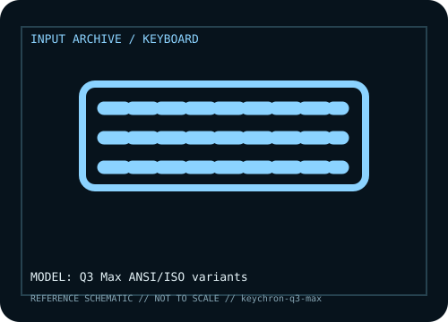

[ KEYBOARDS AND INTEGRATED POINTING DEVICES // IDENTIFIED COMPONENT ]
Keychron Q3 Max
Tenkeyless QMK/VIA mechanical keyboard with gasket mounting and multi-mode connections.

MODEL IDENTIFICATION: Manufacturer model / identifier: Q3 Max ANSI/ISO variants. Compare the unit label, regional suffix, and revision against manufacturer documentation before repair or compatibility claims.
Model specifications
| Catalog subcategory | Keyboards and integrated pointing devices |
|---|---|
| Exact model / ID | Q3 Max ANSI/ISO variants |
| Model-specific features | TKL layout, hot-swap support, QMK/VIA remapping, 2.4 GHz, Bluetooth 5.1 and USB-C; knob and switch SKUs differ. |
| Interface and host support | USB-C wired, Bluetooth or 2.4 GHz receiver; advanced keymaps need compatible software. |
| Revision / driver caveat | Q3 Max is not Q3 or Q3 Pro; verify layout, knob and firmware generation before changing keymaps. |
Preservation and service notes
Retain receiver and keymap, inspect USB-C and stabilizers, and avoid solvents on keycaps or acoustic layers.
Record the as-found label, accessories, host OS, driver or firmware version, and test method. Separate observed condition from published specifications; family-level claims are not proof of an individual unit's revision.
Manufacturer source
- Keychron Q3 Max — manufacturer model pageModel-specific manufacturer reference for identifying specifications, regional SKU, and linked current support documentation.
Manufacturer pages can change or retire. Preserve the applicable manual and note its revision when documenting a physical device.